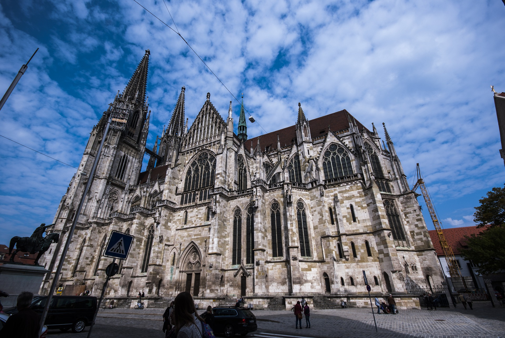

Regensburger Dom
Domplatz 1, 93047 Regensburg
Der Regensburger Dom (auch: Dom St. Peter, benannt nach dem hl. Petrus) ist die bedeutendste Kirche der Stadt Regensburg und die Kathedrale des Bistums Regensburg. Der Dom gehört neben dem Kölner Dom zu den bedeutendsten gotischen Kathedralen in Deutschland.In Nachfolge eines romanischen Doms, von dem noch ein Turm (Eselsturm) erhalten ist,begann der Bau des gotischen Doms 1275. Ab 1450 war das Gebäude überdacht und nutzbar. Der Ausbau der beiden Domtürme und der Turmhelme erfolgte aber erst von 1859 bis 1869.
Tipp:Figur des „lachenden Engels“ am südwestlichen Vierungspfeiler
